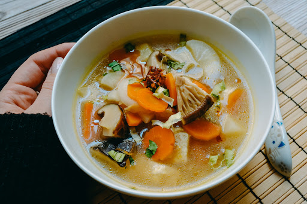

Soups
Warm, comforting, and full of delicate flavors — Japanese soups are built on rich broths and fresh seasonal ingredients. In our classes, you will learn how to prepare balanced, nourishing soups that highlight the essence of traditional Japanese cooking.